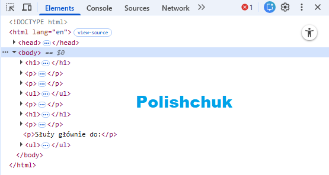
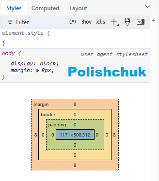

Jest do dyspozycji użytkownika po zainstalowaniu przeglądarki.
-> To cały zestaw narzędzi, który zawiera wiele zakładek, m.in.:
To rozbudowane środowisko, które w 2026 roku staje się "rozszerzeniem IDE", oferując AI, analizę
pamięci, zaawansowane dławienie sieci i ścisłą integrację z kodem źródłowym. Pozwala szybciej
tworzyć lepsze witryny.
To podstawowe narzędzie do edycji -> wbudowane w przeglądarkę np. Firefox.
Służy głównie do:

